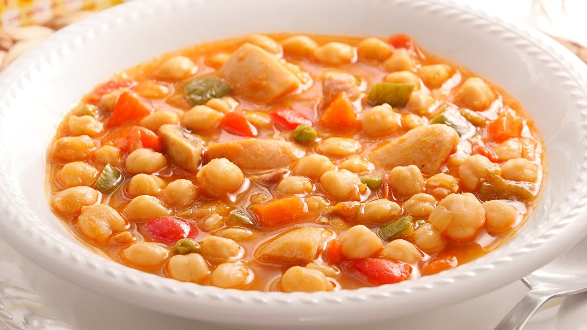

Garbanzos

Ingredientes:
- 1 lata mediana de garbanzos
- 1 pechuga de pollo deshuesada y sin piel
- 3 tomates
- Pimienta
- Cebolla, culantro y chile dulce/li>
- Aceite para cocinar
- Margarina para cocinar
- Salsa Lizano
- 1 pasta de tomate
- Sal y pimienta
Preparación:
- Lavar bien la pechuga de pollo
- Cocinar los tomates en agua hirviendo por unos 10 minutos hasta que empiecen a soltar la cáscara
- Cocinar el pollo en agua hirviendo por unos 10 - 15 minutos. Luego, cortar en trocitos
- Pelar los tomates
- Cortar los olores en trocitos
- Agregar los tomates, los olores y la salsa Lizano a una licuadora junto con el caldo de pollo. Licuar bien
- Sofreír los garbanzos y los trozos de pollo en la mezcla obtenida anteriormente